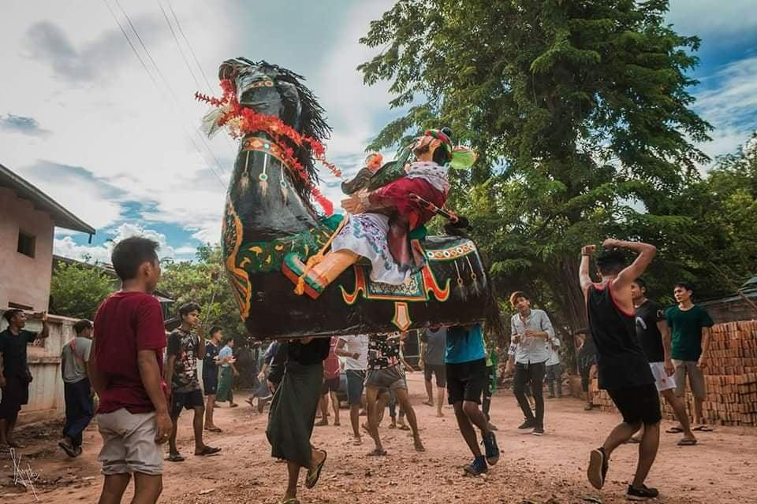

Festivals in Myinkaba Village
Festivals are important parts of Myanmar's cultural and community life. They provide opportunities for people to celebrate traditions, spend time together, and share meaningful experiences.
Myanmar has many traditional festivals throughout the year. Thingyan, the Myanmar New Year Water Festival, and Thadingyut, the Festival of Lights, are two well-known examples.
Through this section, visitors can learn about Myanmar's festival traditions and explore how celebrations contribute to cultural identity and community connections.
Festivals and Celebrations
Discover traditional festivals and their importance in community life.

Traditional Festivals
Explore celebrations such as Thingyan and Thadingyut, and learn about their cultural meanings and traditions.
Community Celebrations
Learn how festivals and shared celebrations create opportunities for families and community members to connect.